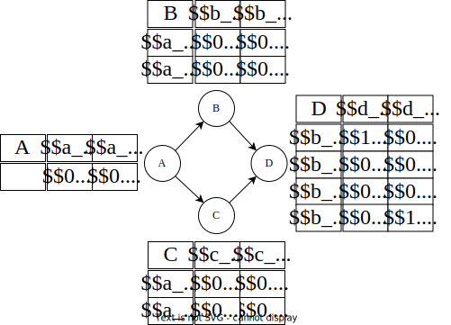

UAI file format
For a complete description of the format, see here As an example, let us consider the following network

Preamble
The preamble starts with a single line indicating which type of network is encoded. In our case, this is a Bayesian network so the file starts with BAYES.
Then, the number of variable in the network is given, with their domain size. In the above network there are four binary variables, so the preamble looks like
BAYES
4
2 2 2 2
Finally, the number of function (i.e., CPT for Bayesian network) is given, followed by the functions' scope. For each function, the number of variable in their scope is given first, followed by the variable indexes. It is important, in this step, that the variables for which the CPT is defined (i.e., the child) is the last variable in the scope. The preamble for our Bayesian network is
BAYES
4
2 2 2 2
4
1 0
2 0 1
2 0 2
3 1 2 3
Function tables
Finally, the weights of each CPT is given, in the order in which they are defined in the preamble.
For each CPT, the number of values inside it is given, followed by the values. The values are ordered following a "last increment first".
For example, the CPT of B is defined over two binary variables, A and B (indexes 0 and 1).
If their domain are represented by a 2-tuples, then the weights must be given in the following domains order(0, 0), (0, 1), (1, 0), (1, 1).
The final file looks like
BAYES
4
2 2 2 2
4
1 0
2 0 1
2 0 2
3 1 2 3
2
0.2 0.8
4
0.6 0.4 0.3 0.7
4
0.25 0.75 0.75 0.25
8
1.0 0.0 0.35 0.65 0.8 0.2 0.0 1.0
The evidences
The evidences must be encoded separately (either in a file, or passed as a string in the command line arguments). The evidences simply assign a value to a variable; hence, for encoding \( D = d_0 \), we use the following file
1 3 0
The file starts by the number of evidences, and then give for each variable in the evidences its value.